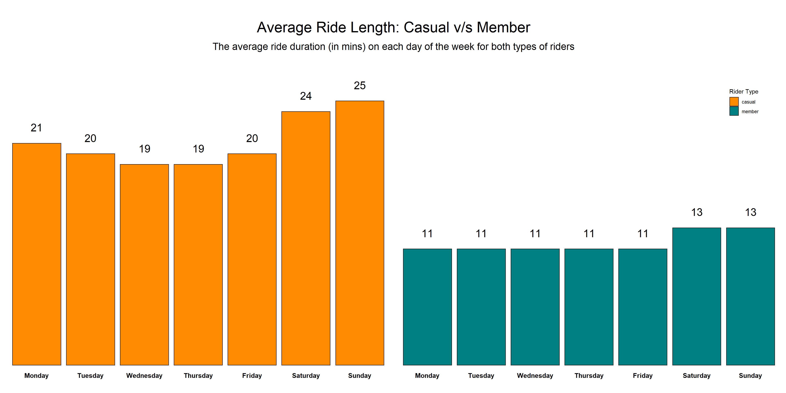
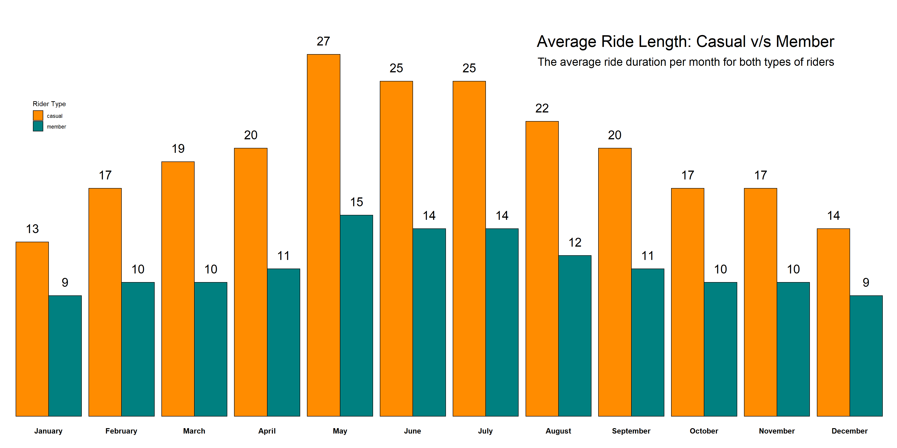
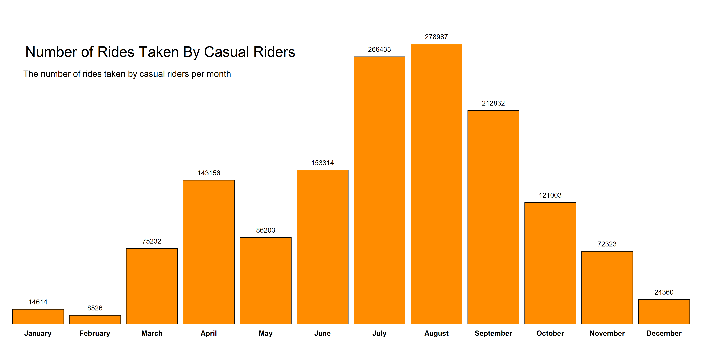
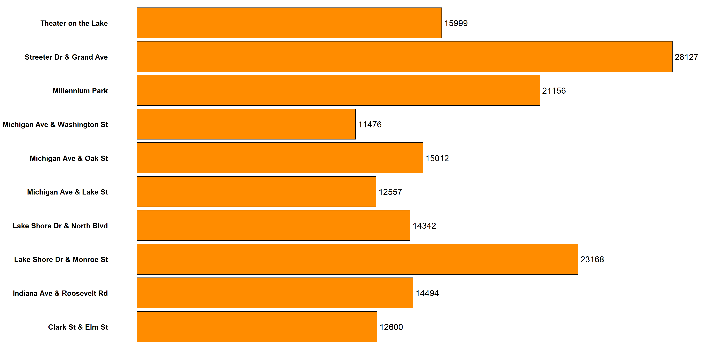

Case Study-Cyclistic Bike Share
Introduction
I finished my case study on “Cyclistic,” a fictional bikeshare firm situated in Chicago, Illinois. The company owns and operates a fleet of over 5000 bicycles that are geotracked and locked into a network of over 600 stations across Chicago.The company serves two types of customers-casual riders(those who purchase single-ride or full-day passes) and annual members(those who purchase annual memberships).Since annual membership is more profitable for the company, the marketing director was interested in maximizing the number of annual members by creating marketing strategies that aid in the conversion of more casual riders to annual members.My responsibility was to make data-driven recommendations for the marketing campaign.
Problem Statement
To learn more about how annual members and casual riders use Cyclistic bikes differently.
About the Dataset
I used the “Divvy Bikeshare Dataset,” which is owned by the “Divvy” bikesharing company. The data is a third-party dataset made public by Motivate International Inc., the firm that runs the Divvy bike-sharing service.
The link to the dataset: https://divvy-tripdata.s3.amazonaws.com/index.html
Data is available starting from the year 2013 till year 2021 (until April).The dataset includes fields such as-type of bike rented,start and end dates of the journey,type of rider (casual/annual member) etc.The dataset is structured in the form of spreadsheets that contain both numerical as well as categorical data.For the purpose of my analysis,I used data from the years 2020-2021(until April)
Credibility of the data: Divvy permits Motivate Inc. to make certain system data owned by them to be made available to the public.The data is current,completely updated and cited.
The link to the license-agreement: https://www.divvybikes.com/data-license-agreement
The data cannot be hosted, streamed, or published as a standalone dataset under the terms of the licence. Furthermore, customers’ personal information such as addresses, names, and other identifiers should not be used in any way.
Issues with the data: In some of the spreadsheets, the column names are inconsistent, and there is missing data.
Installing and Loading Packages
For my project,I used various packages in R Studio,such as, Tidyverse, Lubridate (for datetime functions), Tidyr (for data-cleaning), ggplot2 (for creating visualizations) and many others.
library(tidyverse)## -- Attaching packages --------------------------------------- tidyverse 1.3.1 --## v ggplot2 3.3.3 v purrr 0.3.4
## v tibble 3.1.1 v dplyr 1.0.6
## v tidyr 1.1.3 v stringr 1.4.0
## v readr 1.4.0 v forcats 0.5.1## -- Conflicts ------------------------------------------ tidyverse_conflicts() --
## x dplyr::filter() masks stats::filter()
## x dplyr::lag() masks stats::lag()library(readr)
library(dplyr)
library(tidyr)
library(lubridate)##
## Attaching package: 'lubridate'## The following objects are masked from 'package:base':
##
## date, intersect, setdiff, unionlibrary(ggplot2)Importing the Dataset
I used the read_csv() function of Readr package for importing the datasets in R Studio.
data_apr2020<-read_csv("C:/Users/Vrinda Marwah/Desktop/Case Study/csv files/202004-divvy-tripdata.csv")##
## -- Column specification --------------------------------------------------------
## cols(
## ride_id = col_character(),
## ride_type = col_character(),
## start_dt = col_character(),
## end_dt = col_character(),
## start_station = col_character(),
## start_station_id = col_double(),
## end_station = col_character(),
## end_station_id = col_double(),
## start_lat = col_double(),
## start_lng = col_double(),
## end_lat = col_double(),
## end_lng = col_double(),
## rider_type = col_character()
## )data_may2020<-read_csv("C:/Users/Vrinda Marwah/Desktop/Case Study/csv files/202005-divvy-tripdata.csv")##
## -- Column specification --------------------------------------------------------
## cols(
## ride_id = col_character(),
## ride_type = col_character(),
## start_dt = col_character(),
## end_dt = col_character(),
## start_station = col_character(),
## start_station_id = col_double(),
## end_station = col_character(),
## end_station_id = col_double(),
## start_lat = col_double(),
## start_lng = col_double(),
## end_lat = col_double(),
## end_lng = col_double(),
## rider_type = col_character()
## )data_jun2020<-read_csv("C:/Users/Vrinda Marwah/Desktop/Case Study/csv files/202006-divvy-tripdata.csv")##
## -- Column specification --------------------------------------------------------
## cols(
## ride_id = col_character(),
## ride_type = col_character(),
## start_dt = col_character(),
## end_dt = col_character(),
## start_station = col_character(),
## start_station_id = col_double(),
## end_station = col_character(),
## end_station_id = col_double(),
## start_lat = col_double(),
## start_lng = col_double(),
## end_lat = col_double(),
## end_lng = col_double(),
## rider_type = col_character()
## )data_jul2020<-read_csv("C:/Users/Vrinda Marwah/Desktop/Case Study/csv files/202007-divvy-tripdata.csv")##
## -- Column specification --------------------------------------------------------
## cols(
## ride_id = col_character(),
## ride_type = col_character(),
## start_dt = col_character(),
## end_dt = col_character(),
## start_station = col_character(),
## start_station_id = col_double(),
## end_station = col_character(),
## end_station_id = col_double(),
## start_lat = col_double(),
## start_lng = col_double(),
## end_lat = col_double(),
## end_lng = col_double(),
## rider_type = col_character()
## )data_aug2020<-read_csv("C:/Users/Vrinda Marwah/Desktop/Case Study/csv files/202008-divvy-tripdata.csv")##
## -- Column specification --------------------------------------------------------
## cols(
## ride_id = col_character(),
## ride_type = col_character(),
## start_dt = col_character(),
## end_dt = col_character(),
## start_station = col_character(),
## start_station_id = col_double(),
## end_station = col_character(),
## end_station_id = col_double(),
## start_lat = col_double(),
## start_lng = col_double(),
## end_lat = col_double(),
## end_lng = col_double(),
## rider_type = col_character()
## )data_sept2020<-read_csv("C:/Users/Vrinda Marwah/Desktop/Case Study/csv files/202009-divvy-tripdata.csv")##
## -- Column specification --------------------------------------------------------
## cols(
## ride_id = col_character(),
## ride_type = col_character(),
## start_dt = col_character(),
## end_dt = col_character(),
## start_station = col_character(),
## start_station_id = col_double(),
## end_station = col_character(),
## end_station_id = col_double(),
## start_lat = col_double(),
## start_lng = col_double(),
## end_lat = col_double(),
## end_lng = col_double(),
## rider_type = col_character()
## )data_oct2020<-read_csv("C:/Users/Vrinda Marwah/Desktop/Case Study/csv files/202010-divvy-tripdata.csv")##
## -- Column specification --------------------------------------------------------
## cols(
## ride_id = col_character(),
## ride_type = col_character(),
## start_dt = col_character(),
## end_dt = col_character(),
## start_station = col_character(),
## start_station_id = col_double(),
## end_station = col_character(),
## end_station_id = col_double(),
## start_lat = col_double(),
## start_lng = col_double(),
## end_lat = col_double(),
## end_lng = col_double(),
## rider_type = col_character()
## )data_nov2020<-read_csv("C:/Users/Vrinda Marwah/Desktop/Case Study/csv files/202011-divvy-tripdata.csv")##
## -- Column specification --------------------------------------------------------
## cols(
## ride_id = col_character(),
## ride_type = col_character(),
## start_dt = col_character(),
## end_dt = col_character(),
## start_station = col_character(),
## start_station_id = col_double(),
## end_station = col_character(),
## end_station_id = col_double(),
## start_lat = col_double(),
## start_lng = col_double(),
## end_lat = col_double(),
## end_lng = col_double(),
## rider_type = col_character()
## )data_dec2020<-read_csv("C:/Users/Vrinda Marwah/Desktop/Case Study/csv files/202012-divvy-tripdata.csv")##
## -- Column specification --------------------------------------------------------
## cols(
## ride_id = col_character(),
## ride_type = col_character(),
## start_dt = col_character(),
## end_dt = col_character(),
## start_station = col_character(),
## start_station_id = col_character(),
## end_station = col_character(),
## end_station_id = col_character(),
## start_lat = col_double(),
## start_lng = col_double(),
## end_lat = col_double(),
## end_lng = col_double(),
## rider_type = col_character()
## )data_jan2021<-read_csv("C:/Users/Vrinda Marwah/Desktop/Case Study/csv files/202101-divvy-tripdata.csv")##
## -- Column specification --------------------------------------------------------
## cols(
## ride_id = col_character(),
## ride_type = col_character(),
## start_dt = col_character(),
## end_dt = col_character(),
## start_station = col_character(),
## start_station_id = col_character(),
## end_station = col_character(),
## end_station_id = col_character(),
## start_lat = col_double(),
## start_lng = col_double(),
## end_lat = col_double(),
## end_lng = col_double(),
## rider_type = col_character()
## )data_feb2021<-read_csv("C:/Users/Vrinda Marwah/Desktop/Case Study/csv files/202102-divvy-tripdata.csv")##
## -- Column specification --------------------------------------------------------
## cols(
## ride_id = col_character(),
## ride_type = col_character(),
## start_dt = col_character(),
## end_dt = col_character(),
## start_station = col_character(),
## start_station_id = col_character(),
## end_station = col_character(),
## end_station_id = col_character(),
## start_lat = col_double(),
## start_lng = col_double(),
## end_lat = col_double(),
## end_lng = col_double(),
## rider_type = col_character()
## )data_mar2021<-read_csv("C:/Users/Vrinda Marwah/Desktop/Case Study/csv files/202103-divvy-tripdata.csv")##
## -- Column specification --------------------------------------------------------
## cols(
## ride_id = col_character(),
## ride_type = col_character(),
## start_dt = col_character(),
## end_dt = col_character(),
## start_station = col_character(),
## start_station_id = col_character(),
## end_station = col_character(),
## end_station_id = col_character(),
## start_lat = col_double(),
## start_lng = col_double(),
## end_lat = col_double(),
## end_lng = col_double(),
## rider_type = col_character()
## )data_apr2021<-read_csv("C:/Users/Vrinda Marwah/Desktop/Case Study/csv files/202104-divvy-tripdata.csv")##
## -- Column specification --------------------------------------------------------
## cols(
## ride_id = col_character(),
## ride_type = col_character(),
## start_dt = col_character(),
## end_dt = col_character(),
## start_station = col_character(),
## start_station_id = col_character(),
## end_station = col_character(),
## end_station_id = col_character(),
## start_lat = col_double(),
## start_lng = col_double(),
## end_lat = col_double(),
## end_lng = col_double(),
## rider_type = col_character()
## )Data Cleaning
1. Making Datatypes Consistent
I noticed that in the datasets starting from December 2020 - April 2021,the columns start_station_id and end_station_id were of character datatype while the two fields were of double datatype in the datasets from April 2020 - November 2020.To ensure consistency across all fields in my datasets,I converted the two fields to character type in all the datasets.
data_apr2020<-data_apr2020 %>%
mutate(start_station_id=as.character(start_station_id),end_station_id=as.character(end_station_id))
data_may2020<-data_may2020 %>%
mutate(start_station_id=as.character(start_station_id),end_station_id=as.character(end_station_id))
data_jun2020<-data_jun2020 %>%
mutate(start_station_id=as.character(start_station_id),end_station_id=as.character(end_station_id))
data_jul2020<-data_jul2020 %>%
mutate(start_station_id=as.character(start_station_id),end_station_id=as.character(end_station_id))
data_aug2020<-data_aug2020 %>%
mutate(start_station_id=as.character(start_station_id),end_station_id=as.character(end_station_id))
data_sept2020<-data_sept2020 %>%
mutate(start_station_id=as.character(start_station_id),end_station_id=as.character(end_station_id))
data_oct2020<-data_oct2020 %>%
mutate(start_station_id=as.character(start_station_id),end_station_id=as.character(end_station_id))
data_nov2020<-data_nov2020 %>%
mutate(start_station_id=as.character(start_station_id),end_station_id=as.character(end_station_id))Combining all the Datasets
I used the rbind() function to combine all the csv files into one single dataset.
all_data<-rbind(data_apr2020,data_may2020,data_jun2020,data_jul2020,data_aug2020,data_sept2020,data_oct2020,data_nov2020,data_dec2020,data_jan2021,data_feb2021,data_mar2021,data_apr2021)
str(all_data)## spec_tbl_df[,13] [3,826,978 x 13] (S3: spec_tbl_df/tbl_df/tbl/data.frame)
## $ ride_id : chr [1:3826978] "A847FADBBC638E45" "5405B80E996FF60D" "5DD24A79A4E006F4" "2A59BBDF5CDBA725" ...
## $ ride_type : chr [1:3826978] "docked_bike" "docked_bike" "docked_bike" "docked_bike" ...
## $ start_dt : chr [1:3826978] "26/04/2020 17:45" "17/04/2020 17:08" "01/04/2020 17:54" "07/04/2020 12:50" ...
## $ end_dt : chr [1:3826978] "26/04/2020 18:12" "17/04/2020 17:17" "01/04/2020 18:08" "07/04/2020 13:02" ...
## $ start_station : chr [1:3826978] "Eckhart Park" "Drake Ave & Fullerton Ave" "McClurg Ct & Erie St" "California Ave & Division St" ...
## $ start_station_id: chr [1:3826978] "86" "503" "142" "216" ...
## $ end_station : chr [1:3826978] "Lincoln Ave & Diversey Pkwy" "Kosciuszko Park" "Indiana Ave & Roosevelt Rd" "Wood St & Augusta Blvd" ...
## $ end_station_id : chr [1:3826978] "152" "499" "255" "657" ...
## $ start_lat : num [1:3826978] 41.9 41.9 41.9 41.9 41.9 ...
## $ start_lng : num [1:3826978] -87.7 -87.7 -87.6 -87.7 -87.6 ...
## $ end_lat : num [1:3826978] 41.9 41.9 41.9 41.9 42 ...
## $ end_lng : num [1:3826978] -87.7 -87.7 -87.6 -87.7 -87.7 ...
## $ rider_type : chr [1:3826978] "member" "member" "member" "member" ...
## - attr(*, "spec")=
## .. cols(
## .. ride_id = col_character(),
## .. ride_type = col_character(),
## .. start_dt = col_character(),
## .. end_dt = col_character(),
## .. start_station = col_character(),
## .. start_station_id = col_double(),
## .. end_station = col_character(),
## .. end_station_id = col_double(),
## .. start_lat = col_double(),
## .. start_lng = col_double(),
## .. end_lat = col_double(),
## .. end_lng = col_double(),
## .. rider_type = col_character()
## .. )2. Removing Unnecessary Fields
Since the start_lat and the end_lng fields were not relevant to my analysis,therefore,I excluded the two fields from the dataset.
final_all_data<-all_data %>% select(-(start_lat:end_lng))
str(final_all_data)## tibble[,9] [3,826,978 x 9] (S3: tbl_df/tbl/data.frame)
## $ ride_id : chr [1:3826978] "A847FADBBC638E45" "5405B80E996FF60D" "5DD24A79A4E006F4" "2A59BBDF5CDBA725" ...
## $ ride_type : chr [1:3826978] "docked_bike" "docked_bike" "docked_bike" "docked_bike" ...
## $ start_dt : chr [1:3826978] "26/04/2020 17:45" "17/04/2020 17:08" "01/04/2020 17:54" "07/04/2020 12:50" ...
## $ end_dt : chr [1:3826978] "26/04/2020 18:12" "17/04/2020 17:17" "01/04/2020 18:08" "07/04/2020 13:02" ...
## $ start_station : chr [1:3826978] "Eckhart Park" "Drake Ave & Fullerton Ave" "McClurg Ct & Erie St" "California Ave & Division St" ...
## $ start_station_id: chr [1:3826978] "86" "503" "142" "216" ...
## $ end_station : chr [1:3826978] "Lincoln Ave & Diversey Pkwy" "Kosciuszko Park" "Indiana Ave & Roosevelt Rd" "Wood St & Augusta Blvd" ...
## $ end_station_id : chr [1:3826978] "152" "499" "255" "657" ...
## $ rider_type : chr [1:3826978] "member" "member" "member" "member" ...3. Removing Missing Values
Since some rows had missing data across all columns,I used the drop_na() function to remove all NA values(missing data).
final_all_data<-drop_na(final_all_data)
str(final_all_data)## tibble[,9] [3,592,898 x 9] (S3: tbl_df/tbl/data.frame)
## $ ride_id : chr [1:3592898] "A847FADBBC638E45" "5405B80E996FF60D" "5DD24A79A4E006F4" "2A59BBDF5CDBA725" ...
## $ ride_type : chr [1:3592898] "docked_bike" "docked_bike" "docked_bike" "docked_bike" ...
## $ start_dt : chr [1:3592898] "26/04/2020 17:45" "17/04/2020 17:08" "01/04/2020 17:54" "07/04/2020 12:50" ...
## $ end_dt : chr [1:3592898] "26/04/2020 18:12" "17/04/2020 17:17" "01/04/2020 18:08" "07/04/2020 13:02" ...
## $ start_station : chr [1:3592898] "Eckhart Park" "Drake Ave & Fullerton Ave" "McClurg Ct & Erie St" "California Ave & Division St" ...
## $ start_station_id: chr [1:3592898] "86" "503" "142" "216" ...
## $ end_station : chr [1:3592898] "Lincoln Ave & Diversey Pkwy" "Kosciuszko Park" "Indiana Ave & Roosevelt Rd" "Wood St & Augusta Blvd" ...
## $ end_station_id : chr [1:3592898] "152" "499" "255" "657" ...
## $ rider_type : chr [1:3592898] "member" "member" "member" "member" ...4. Converting to Datetime
Since the fields start_dt and end_dt were of character datatype , I converted them to datetime format.
final_all_data$started_at<-dmy_hm(final_all_data$start_dt)
final_all_data$ended_at<-dmy_hm(final_all_data$end_dt)
str(final_all_data)## tibble[,11] [3,592,898 x 11] (S3: tbl_df/tbl/data.frame)
## $ ride_id : chr [1:3592898] "A847FADBBC638E45" "5405B80E996FF60D" "5DD24A79A4E006F4" "2A59BBDF5CDBA725" ...
## $ ride_type : chr [1:3592898] "docked_bike" "docked_bike" "docked_bike" "docked_bike" ...
## $ start_dt : chr [1:3592898] "26/04/2020 17:45" "17/04/2020 17:08" "01/04/2020 17:54" "07/04/2020 12:50" ...
## $ end_dt : chr [1:3592898] "26/04/2020 18:12" "17/04/2020 17:17" "01/04/2020 18:08" "07/04/2020 13:02" ...
## $ start_station : chr [1:3592898] "Eckhart Park" "Drake Ave & Fullerton Ave" "McClurg Ct & Erie St" "California Ave & Division St" ...
## $ start_station_id: chr [1:3592898] "86" "503" "142" "216" ...
## $ end_station : chr [1:3592898] "Lincoln Ave & Diversey Pkwy" "Kosciuszko Park" "Indiana Ave & Roosevelt Rd" "Wood St & Augusta Blvd" ...
## $ end_station_id : chr [1:3592898] "152" "499" "255" "657" ...
## $ rider_type : chr [1:3592898] "member" "member" "member" "member" ...
## $ started_at : POSIXct[1:3592898], format: "2020-04-26 17:45:00" "2020-04-17 17:08:00" ...
## $ ended_at : POSIXct[1:3592898], format: "2020-04-26 18:12:00" "2020-04-17 17:17:00" ...5. Introducing New Columns
For the purpose of my analysis, I introduced some new columns in my dataset,namely,ride length (duration of rides taken by both types of customers), day of the week (which day(s) of the week is preferred by the two categories) and month (which day(s) of the week is preferred by the two)
final_all_data<-final_all_data %>% mutate(ride_length=round((difftime(ended_at,started_at,units='mins')),2))
final_all_data<-final_all_data %>% mutate(day_of_week=weekdays(started_at))
final_all_data<-final_all_data %>% mutate(date=as.Date(started_at)) %>% mutate(month=format(as.Date(date),"%B"))6. Dealing with Erroneous Data
Because the ride length can’t be less than 0 minutes and can’t be greater than 24 hours (1440 minutes), I removed any data that could’ve led to skewed results of my analysis. I also removed the start dt and end dt fields that I no longer needed.
all_data_comp <- final_all_data[!(final_all_data$ride_length <= 0 | final_all_data$ride_length > 1440),]
full_data_cl<-all_data_comp %>% select(-(start_dt:end_dt))
str(full_data_cl)## tibble[,13] [3,550,764 x 13] (S3: tbl_df/tbl/data.frame)
## $ ride_id : chr [1:3550764] "A847FADBBC638E45" "5405B80E996FF60D" "5DD24A79A4E006F4" "2A59BBDF5CDBA725" ...
## $ ride_type : chr [1:3550764] "docked_bike" "docked_bike" "docked_bike" "docked_bike" ...
## $ start_station : chr [1:3550764] "Eckhart Park" "Drake Ave & Fullerton Ave" "McClurg Ct & Erie St" "California Ave & Division St" ...
## $ start_station_id: chr [1:3550764] "86" "503" "142" "216" ...
## $ end_station : chr [1:3550764] "Lincoln Ave & Diversey Pkwy" "Kosciuszko Park" "Indiana Ave & Roosevelt Rd" "Wood St & Augusta Blvd" ...
## $ end_station_id : chr [1:3550764] "152" "499" "255" "657" ...
## $ rider_type : chr [1:3550764] "member" "member" "member" "member" ...
## $ started_at : POSIXct[1:3550764], format: "2020-04-26 17:45:00" "2020-04-17 17:08:00" ...
## $ ended_at : POSIXct[1:3550764], format: "2020-04-26 18:12:00" "2020-04-17 17:17:00" ...
## $ ride_length : 'difftime' num [1:3550764] 27 9 14 12 ...
## ..- attr(*, "units")= chr "mins"
## $ day_of_week : chr [1:3550764] "Sunday" "Friday" "Wednesday" "Tuesday" ...
## $ date : Date[1:3550764], format: "2020-04-26" "2020-04-17" ...
## $ month : chr [1:3550764] "April" "April" "April" "April" ...Analysis Phase
To determine the average duration of ride for both categories of customers, I used several central tendency measures such as mean and median. I also calculated the minimum and maximum ride durations for both categories.
full_data_cl%>% summarise(ride_length_mean=mean(ride_length),ride_length_max=max(ride_length),ride_length_min=min(ride_length),ride_length_median=median(ride_length))## # A tibble: 1 x 4
## ride_length_mean ride_length_max ride_length_min ride_length_median
## <drtn> <drtn> <drtn> <drtn>
## 1 24.26439 mins 1440 mins 1 mins 15 minsAlso, in order to better understand my data, I calculated all four metrics separately for both categories.
aggregate(full_data_cl$ride_length ~ full_data_cl$rider_type,FUN=mean)## full_data_cl$rider_type full_data_cl$ride_length
## 1 casual 36.78170 mins
## 2 member 15.55407 minsaggregate(full_data_cl$ride_length ~ full_data_cl$rider_type,FUN=median)## full_data_cl$rider_type full_data_cl$ride_length
## 1 casual 22 mins
## 2 member 12 minsaggregate(full_data_cl$ride_length ~ full_data_cl$rider_type,FUN=min)## full_data_cl$rider_type full_data_cl$ride_length
## 1 casual 1 mins
## 2 member 1 minsaggregate(full_data_cl$ride_length ~ full_data_cl$rider_type,FUN=max)## full_data_cl$rider_type full_data_cl$ride_length
## 1 casual 1440 mins
## 2 member 1440 minsI calculated the average bike duration for both groups on various days of the week.
full_data_cl$day_of_week <- ordered(full_data_cl$day_of_week, levels = c('Monday', 'Tuesday', 'Wednesday', 'Thursday', 'Friday', 'Saturday', 'Sunday'))
aggregate(full_data_cl$ride_length ~ full_data_cl$rider_type+full_data_cl$day_of_week,FUN=mean)## full_data_cl$rider_type full_data_cl$day_of_week full_data_cl$ride_length
## 1 casual Monday 36.45968 mins
## 2 member Monday 14.76745 mins
## 3 casual Tuesday 34.47965 mins
## 4 member Tuesday 14.72014 mins
## 5 casual Wednesday 32.93656 mins
## 6 member Wednesday 14.64623 mins
## 7 casual Thursday 33.16641 mins
## 8 member Thursday 14.71212 mins
## 9 casual Friday 34.88261 mins
## 10 member Friday 15.24410 mins
## 11 casual Saturday 39.37324 mins
## 12 member Saturday 17.31253 mins
## 13 casual Sunday 40.93097 mins
## 14 member Sunday 17.49723 minsaggregate(full_data_cl$ride_length ~ full_data_cl$rider_type+full_data_cl$day_of_week,FUN=median)## full_data_cl$rider_type full_data_cl$day_of_week full_data_cl$ride_length
## 1 casual Monday 21 mins
## 2 member Monday 11 mins
## 3 casual Tuesday 20 mins
## 4 member Tuesday 11 mins
## 5 casual Wednesday 19 mins
## 6 member Wednesday 11 mins
## 7 casual Thursday 19 mins
## 8 member Thursday 11 mins
## 9 casual Friday 20 mins
## 10 member Friday 11 mins
## 11 casual Saturday 24 mins
## 12 member Saturday 13 mins
## 13 casual Sunday 25 mins
## 14 member Sunday 13 minsI estimated the number of rides taken by both groups of cyclists on various days of the week.
full_data_cl %>% group_by(rider_type,day_of_week) %>% summarise(No_of_rides=n(),.groups = 'drop') %>% arrange(day_of_week)## # A tibble: 14 x 3
## rider_type day_of_week No_of_rides
## <chr> <ord> <int>
## 1 casual Monday 154634
## 2 member Monday 274009
## 3 casual Tuesday 152733
## 4 member Tuesday 293768
## 5 casual Wednesday 157262
## 6 member Wednesday 308024
## 7 casual Thursday 165095
## 8 member Thursday 305598
## 9 casual Friday 214430
## 10 member Friday 317536
## 11 casual Saturday 341915
## 12 member Saturday 324777
## 13 casual Sunday 270914
## 14 member Sunday 270069Further, I calculated the month-wise average,max and min duration of rides taken by both categories
full_data_cl$month<-ordered(full_data_cl$month,levels=c('January','February','March','April','May','June','July','August','September','October','November','December'))
aggregate(full_data_cl$ride_length~full_data_cl$month,FUN=mean)## full_data_cl$month full_data_cl$ride_length
## 1 January 13.92112 mins
## 2 February 18.18959 mins
## 3 March 20.60860 mins
## 4 April 22.15636 mins
## 5 May 30.32615 mins
## 6 June 29.22668 mins
## 7 July 30.73151 mins
## 8 August 26.23676 mins
## 9 September 22.53030 mins
## 10 October 18.94967 mins
## 11 November 18.65090 mins
## 12 December 14.89372 minsaggregate(full_data_cl$ride_length~full_data_cl$month,FUN=median)## full_data_cl$month full_data_cl$ride_length
## 1 January 9 mins
## 2 February 11 mins
## 3 March 13 mins
## 4 April 14 mins
## 5 May 20 mins
## 6 June 18 mins
## 7 July 18 mins
## 8 August 16 mins
## 9 September 14 mins
## 10 October 12 mins
## 11 November 12 mins
## 12 December 10 minsaggregate(full_data_cl$ride_length~full_data_cl$month,FUN=min)## full_data_cl$month full_data_cl$ride_length
## 1 January 1 mins
## 2 February 1 mins
## 3 March 1 mins
## 4 April 1 mins
## 5 May 1 mins
## 6 June 1 mins
## 7 July 1 mins
## 8 August 1 mins
## 9 September 1 mins
## 10 October 1 mins
## 11 November 1 mins
## 12 December 1 minsaggregate(full_data_cl$ride_length~full_data_cl$month,FUN=max)## full_data_cl$month full_data_cl$ride_length
## 1 January 1404 mins
## 2 February 1440 mins
## 3 March 1435 mins
## 4 April 1440 mins
## 5 May 1433 mins
## 6 June 1435 mins
## 7 July 1439 mins
## 8 August 1440 mins
## 9 September 1439 mins
## 10 October 1440 mins
## 11 November 1435 mins
## 12 December 1421 minsFor both groups of cyclists, I determined the average monthly ride duration.
full_data_cl %>% group_by(rider_type,month) %>% summarise(Mean_ride_len=mean(ride_length)) %>% arrange(month)## `summarise()` has grouped output by 'rider_type'. You can override using the `.groups` argument.## # A tibble: 24 x 3
## # Groups: rider_type [2]
## rider_type month Mean_ride_len
## <chr> <ord> <drtn>
## 1 casual January 22.37156 mins
## 2 member January 12.11419 mins
## 3 casual February 31.45308 mins
## 4 member February 14.86279 mins
## 5 casual March 32.34885 mins
## 6 member March 13.76250 mins
## 7 casual April 33.42479 mins
## 8 member April 15.34168 mins
## 9 casual May 44.48870 mins
## 10 member May 19.42829 mins
## # ... with 14 more rowsfull_data_cl %>% group_by(rider_type,month) %>% summarise(Median_ride_len=median(ride_length)) %>% arrange(month)## `summarise()` has grouped output by 'rider_type'. You can override using the `.groups` argument.## # A tibble: 24 x 3
## # Groups: rider_type [2]
## rider_type month Median_ride_len
## <chr> <ord> <drtn>
## 1 casual January 13 mins
## 2 member January 9 mins
## 3 casual February 17 mins
## 4 member February 10 mins
## 5 casual March 19 mins
## 6 member March 10 mins
## 7 casual April 20 mins
## 8 member April 11 mins
## 9 casual May 27 mins
## 10 member May 15 mins
## # ... with 14 more rowsI computed the number of rides taken by both types of cyclists in different months of the year.
full_data_cl %>% group_by(rider_type,month) %>% summarise(No_of_rides=n(),.groups = 'drop') %>% arrange(month)## # A tibble: 24 x 3
## rider_type month No_of_rides
## <chr> <ord> <int>
## 1 casual January 14614
## 2 member January 68345
## 3 casual February 8526
## 4 member February 33992
## 5 casual March 75232
## 6 member March 129014
## 7 casual April 143156
## 8 member April 236716
## 9 casual May 86203
## 10 member May 112027
## # ... with 14 more rowsCreating Visualizations
full_data_cl %>% group_by(rider_type,day_of_week) %>% summarise(Avg_Ride_Len=median(ride_length)) %>%
ggplot(aes(x=day_of_week,y=Avg_Ride_Len,fill=rider_type))+geom_bar(stat='identity',colour="black")+
scale_fill_manual("Rider Type", values = c("casual" = "darkorange", "member" = "#008080"))+
labs(title="Average Ride Length: Casual v/s Member",subtitle = "The average ride duration (in mins) on each day of the week for both types of riders")+
theme(plot.title=element_text(hjust = 0.5,size=27,vjust=-5))+
theme(plot.subtitle = element_text(hjust=0.5,vjust=-10,size=18))+
theme(axis.text.x = element_text(face="bold",colour="black",size=12))+
theme(panel.background = element_blank(),axis.text.x = element_text(vjust=10),axis.ticks.x = element_blank(),axis.ticks.y=element_blank(),axis.text.y = element_blank(),axis.title = element_blank())+
geom_text(aes(label=Avg_Ride_Len),vjust=-1.5,colour = "black", size = 7)+
ylim(0,30)+facet_wrap(~rider_type)+theme(strip.background = element_blank())+theme(strip.text = element_blank())+
theme(legend.position = c(0.95,0.8))## `summarise()` has grouped output by 'rider_type'. You can override using the `.groups` argument.## Don't know how to automatically pick scale for object of type difftime. Defaulting to continuous.
- The barplot above depicts the average duration of bike trips taken by both types of riders on different days of the week.
- We can observe from the graph that casual cyclists are more likely to ride for longer periods of time on weekends. The duration remain roughly identical on the rest of the days.
- On the other hand,the trend for annual members isn’t substantially different on different days of the week.
full_data_cl %>% group_by(rider_type,month) %>% summarise(Avg_Ride_Len=median(ride_length)) %>%
ggplot(aes(x=month,y=Avg_Ride_Len,fill=rider_type))+geom_bar(position="dodge",stat='identity',colour="black")+
scale_fill_manual("Rider Type", values = c("casual" = "darkorange", "member" = "#008080"))+
labs(title="Average Ride Length: Casual v/s Member",subtitle = "The average ride duration per month for both types of riders")+
theme(plot.title=element_text(hjust = 0.9,size=26,vjust=-8))+
theme(plot.subtitle = element_text(hjust=0.9,vjust=-14,size=18))+
theme(panel.background = element_blank(),axis.text.y=element_blank(),axis.ticks.x = element_blank(),axis.ticks.y = element_blank(),axis.title.x = element_blank(),axis.title.y = element_blank())+
theme(axis.text.x = element_text(size=12,face="bold",colour="black",vjust = 8))+
theme(legend.position = c(0.05,0.8))+geom_text(aes(label=Avg_Ride_Len),position=position_dodge(width=0.9),vjust=-1,colour="black",size=7)## `summarise()` has grouped output by 'rider_type'. You can override using the `.groups` argument.## Don't know how to automatically pick scale for object of type difftime. Defaulting to continuous.
## Don't know how to automatically pick scale for object of type difftime. Defaulting to continuous.
- The barplot above depicts the average length of bike rides taken by both types of cyclists over various months of the year.
- We can observe from the graph that during peak summer season (May-August), casual members are more likely to bike for longer periods of time
full_data_cl %>% group_by(month, rider_type) %>% summarise(number_of_ride = n(), .groups = 'drop') %>%
filter(rider_type == 'casual') %>% ggplot(aes(x = month, y = number_of_ride)) + geom_bar(stat = 'identity', colour = "black", fill = "darkorange") +
labs(title="Number of Rides Taken By Casual Riders",subtitle="The number of rides taken by casual riders per month ") +
theme(plot.title=element_text(hjust = 0.05, size = 30, vjust = -13)) +
theme(plot.subtitle = element_text(hjust=0.04,vjust=-27,size=18))+
theme(axis.text.x = element_text(face = "bold", colour = "black", size = 15,vjust=8)) +
theme(axis.text.y = element_blank(),panel.background = element_blank(), axis.line = element_blank(), axis.ticks.x = element_blank(),axis.ticks.y=element_blank(),
axis.title = element_blank())+geom_text(aes(label=number_of_ride),vjust=-1,colour="black",size=5)
- The barplot depicts the number of bike rides taken by casual riders during various months of the year.
- We can observe that casual members had a stronger tendency to take up more rides during early fall (July-Sept)
- The month of February sees the lowest number of rides.
full_data_cl %>%group_by(start_station, rider_type) %>%summarise(number_of_ride = n(), .groups = 'drop') %>%
filter(start_station != "", rider_type != 'member') %>%arrange(-number_of_ride) %>%head(n=10) %>%select(-rider_type) %>%
ggplot(aes(x=start_station,y=number_of_ride))+geom_bar(stat="identity",colour="black",fill="darkorange")+
theme(axis.text.x = element_blank()) +theme(axis.text.y = element_text(face = "bold", colour = "black", size = 15)) +
theme(panel.background = element_blank(), axis.line = element_blank(), axis.ticks.y = element_blank(), axis.ticks.x=element_blank(),axis.title=element_blank())+coord_flip()+geom_text(aes(label=number_of_ride),size=6,hjust=-0.1)
- The barplot above depicts the top ten stations from where the company get’s most of it’s casual riders.
- We can see from the graph that maximum number of casual riders start their bike journey from the following three stations:-
- Streeter Dr & Grand Ave
- Millenium Park
- Lake Shore Dr & Monroe St.
My Recommendations
A “10-day bike streak” program that rewards casual cyclists with a discount on annual memberships as well as some attractive goodies if they ride for more than 25 minutes for 10 days in a row. This will enable the company to market the annual membership program as well as attract more number of casual riders to weekday rides.
Since a large number of casual riders prefer to take more rides from July to September, the company may introduce a “Early Fall Offer” for a limited time, in which casual riders receive attractive discounts on annual memberships.
Promoting the annual membership program through display boards, posters, and fliers at the three stations where the majority of casual riders come from, with the most successful strategies being expanded to less popular stations later.
**Thanks for Reading!**